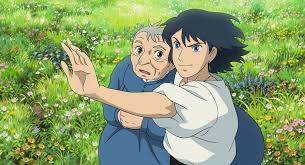

Howl's Moving Castle (Japanese: ハウルの動く城, Hepburn: Hauru no Ugoku Shiro) is a 2004 Japanese animated fantasy film written and directed by Hayao Miyazaki. The film is loosely based on the 1986 novel of the same name by British author Diana Wynne Jones. The film was produced by Toshio Suzuki, animated by Studio Ghibli and distributed by Toho. The Japanese voice cast featured Chieko Baisho and Takuya Kimura, while the English dub version starred Jean Simmons, Emily Mortimer, Lauren Bacall, Christian Bale, Josh Hutcherson and Billy Crystal.
The story is set in a fictional kingdom where both magic and early 20th-century technology are prevalent, against the backdrop of a war with another kingdom. The film tells the story of a young, content milliner named Sophie who is turned into an old woman by a witch who enters her shop and curses her. She encounters a wizard named Howl and gets caught up in his resistance to fighting for the king.
Influenced by Miyazaki's opposition to the United States' invasion of Iraq in 2003, the film contains strong anti-war themes. Miyazaki stated that he "had a great deal of rage" about the Iraq war, which led him to make a film which he felt would be poorly received in the US. It also explores the theme of old age, depicting age positively as something which grants the protagonist freedom. The film contains feminist elements as well, and carries messages about the value of compassion.
In 2013, Miyazaki said the film was his favorite creation, explaining "I wanted to convey the message that life is worth living, and I don't think that's changed." The movie is thematically significantly different from the book; while the book focuses on challenging class and gender norms, the film focuses on love, and personal loyalty and the destructive effects of war.
Howl's Moving Castle had its world premiere at the Venice Film Festival on 5 September 2004, and was theatrically released in Japan on 20 November 2004. It went on to gross $190 million in Japan and $236 million worldwide, making it one of the most financially successful Japanese films in history. The film received critical acclaim, particularly for its visuals and Miyazaki's presentation of the themes. It was nominated for the Academy Award for Best Animated Feature at the 78th Academy Awards, but lost to Wallace & Gromit: The Curse of the Were-Rabbit, in 2006, and won several other awards, including four Tokyo Anime Awards and a Nebula Award for Best Script.

Directed by Hayao Miyazaki
Based on Howl's Moving Castle by Diana Wynne Jones
"I wanted to convey the message that life is worth living,
and I don't think that's changed."
-Hayao Miyazaki
Sophie, a young milliner and eldest of three sisters, encounters a wizard named Howl on her way to visit her sister Lettie. Upon returning home, she meets the Witch of the Waste, who transforms her into a ninety-year-old woman. Seeking to break the curse, Sophie leaves home and sets off through the countryside. She meets a living scarecrow, whom she calls "Turnip Head". He leads her to Howl's moving castle where she enters without invitation. She subsequently meets Howl's young apprentice Markl and a fire demon named Calcifer, the source of the castle's magic and movement. Calcifer makes a deal with Sophie, agreeing to break her curse if she breaks his link with Howl. When Howl appears, Sophie announces that she has "hired herself" as a cleaning lady.
Meanwhile, Sophie's nation is caught up in a war with a neighboring kingdom, who is searching for their missing prince. The King summons Howl to fight in the war. However, Howl decides to send Sophie to the King (under the pretense of being his mother) to tell him that Howl is too much of a coward to fight. Before leaving, he gives Sophie a charmed ring that leads her to Calcifer and guarantees her safety. Sophie meets Suliman, the king's head sorceress, and also the Witch of the Waste, whom Suliman punishes by draining all of her power and reverting her to her true age, that of a harmless old woman. Suliman warns Sophie that Howl will meet the same fate if he does not fight for the king. Howl then arrives to rescue Sophie. Suliman tries to trap him by turning him into a monster, but with Sophie's help he remembers himself and just barely avoids death. The duo escapes along with the former Witch of the Waste and Suliman's dog Heen. In the meantime, soldiers from each kingdom break into the homes of both Jenkins and Pendragon (Howl's aliases in those kingdoms). However, the men only find an empty courtyard and warehouse, as the castle's magic nature allows travel between 4 separate residences.
Sophie learns that Howl's life is somehow bound to Calcifer's and that Howl has been transforming into a bird-like creature to interfere with both sides in the war, but each transformation makes it more difficult for him to return to human form. Howl then has the castle magically linked to Sophie's home, parking the castle itself on the town's outskirts. A few days later, the town is bombed by enemy aircraft and Suliman's henchmen attack the house and Sophie's hat shop. Howl heads out to protect the group. Sophie then moves everyone out of the house and removes Calcifer from the fireplace, which collapses the castle. The Witch of the Waste realizes that Calcifer has Howl's heart and grabs the fire demon, setting herself on fire. Sophie panics and pours water onto the Witch, which douses Calcifer. The remainder of the castle then splits in two; Sophie falls down a chasm and is separated from the group.
Following the charmed ring, Sophie wanders into a scene from the past, where she sees a young Howl catch a falling star – Calcifer – and give him his heart. Sophie calls for them to find her in the future as she is teleported away. She returns to the present, finds Howl, and they reunite with the others. The Witch returns Howl's heart, and Sophie places it back inside Howl, reviving him and freeing Calcifer, though he decides to stay. Sophie's curse is broken, though her hair remains white – a symbol to show that her learning and maturity from the whole experience are intact. After she kisses Turnip Head on the cheek, he returns to human form, revealing himself to be Justin, the missing prince from the enemy kingdom. He reveals that only his true love's kiss can break his curse. After seeing Sophie's affection lies with Howl, he promptly heads for home to cease the war, but promises he will see them again. Suliman, watching through a crystal globe, also decides to end the war. Sometime later, bombers fly under dark skies over a recovered and green countryside headed to another war, while Sophie, Howl, and the others travel in the opposite direction in a new flying castle.
Howl's Moving Castle contains strong anti-war themes, influenced by Miyazaki's distaste for the 2003 Iraq War. When he received an Oscar for Spirited Away, he said that he "had a great deal of rage about [the war]. So [he] felt some hesitation about the award." Miyazaki identifies as a pacifist. On the eve of the Iraq War, Miyazaki decided to make a film that he felt would be poorly received in the United States. Despite the film's success in that country, literary scholar Dani Cavallaro stated that Miyazaki was able to "create a film which ought, in principle, to have caused a certain unease among American audiences." In the movie, Madame Suliman appears to have only sadistic motivations for creating conflict, and despite being omniscient, is unable to recognize the idiocy of the war until the very end of the story. This reflects Miyazaki's desire to show real-world conflicts as also being somewhat arbitrary and fueled by the desires of capricious people. Cavallaro stated that the depiction of the war carried "an unmistakable bitter taste." She also writes that the military presence and warfare was highlighted in the film. From the early concept sketches military elements were emphasized, and when the film shows the bustling commercial district the soldiers in uniforms stand out intentionally.
The universe of Howl's Moving Castle is depicted as not having clear-cut villains and heroes; instead, the characters are complex, and even those that are initially portrayed in a negative light, such as Howl, are shown as capable of change. Matt Kimmich has stated, however, that the simplistic message of the film is that "war is bad." A scene where Sophie is standing in a beautiful field of flowers is interrupted by a war machine, "a finger accusing empire as the destroyer of peace." This portrayal is in strong contrast to other Miyazaki films like Princess Mononoke, which criticizes military conflict in a more nuanced manner. Andrew Osmond stated that "Howl's pure-hearted anti-war stance is presented as nihilism with no alternative as he fights forces from each side and becomes the worst terror of all," in the form of the monstrous bird. By transforming into the bird, Howl risks losing his own humanity; Calcifer comments at one point that he will soon not be able to return to human form. In contrast, Ashitaka in Princess Mononoke fights the demonic sickness with which he is afflicted, and tries to negotiate a peace between the two sides. Osmond states that both films also point out the limits of masculinity, as exemplified by Howl and Ashitaka.

Miyazaki stated that an attractive aspect of the story of Howl's Moving Castle was the relatively positive light it shed on growing old. When Sophie becomes old as a result of the witch's spell, she also feels more able to speak her mind. According to Miyazaki, old women are only infrequently allowed to dominate the screen as in Howl's Moving Castle, which made it a risky concept. Elizabeth Parsons stated that the film disrupts the stereotype of "aged unattractiveness," when the artificially aged Sophie manages to rescue two attractive men (who come to love her) and to unintentionally end the war in her country. Sophie's actions are those usually associated with grandmothers, such as being kind and nurturing to those around her, and engaging in housework; however, these actions are depicted as being powerful and heroic. Sophie is one of several strong female protagonists in Miyazaki's films. According to Parsons, this gives the film a feminist aspect as well. Additionally, even though Sophie manages to make her presence in the castle legitimate by claiming to be a cleaning lady, the film goes on to show that the housework is equitably distributed, strengthening its feminist aspect.
In 2013, Miyazaki stated that Howl's Moving Castle was his favorite creation, and explained his choice by saying "I wanted to convey the message that life is worth living, and I don't think that's changed." In the film, Sophie is shown to overcome extreme challenges by learning to put the well-being of those she cares about above her own self-interest, a quality which Miyazaki refers to as devotion. Several of the protagonists in Miyazaki's films, such as Ashitaka and San in Princess Mononoke and Sheeta and Pazu in Castle in the Sky learn to survive by learning the same lesson. Cavallaro states that Miyazaki spreads this moral through the entire film, to convey human beings' ability to be compassionate, such as when the scarecrow holds an umbrella over Sophie's head when it rains. Over the course of the film, Howl, its most vain and selfish character, also learns to put others before himself. When Madame Suliman returns the Witch of the Waste to her true form as a decrepit old woman, Sophie takes her in and cares for her, despite the witch being responsible for Sophie's curse, thus strongly demonstrating the idea of compassion. The witch then nearly destroys Howl through her selfish behavior, but also helps save the castle at the end. Parsons writes that "In Miyazaki's balancing act, old women can be powerful and weak, positive and negative, nurturing and selfish, maligned and loved; in short, they can not be simply categorized or stereotyped, and they can not be dismissed as fantasy malefactors embodied by evil witches." They are also given a lot of space in the film as active characters, something not commonly found in western movies.